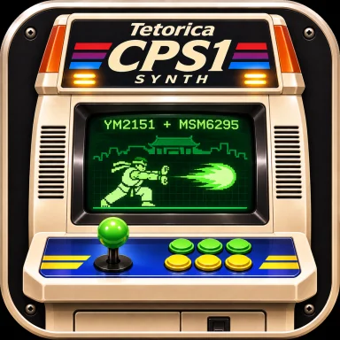

<!doctype html>
<html lang="en">
<meta charset="utf-8"><meta name="viewport" content="width=device-width,initial-scale=1">
<title>Tetorica CPS1 Synth</title>
<link rel="icon" href="../tetorica_cps1_synth.webp"><link rel="stylesheet" href="./synth.css">
<main data-mode="synth">
<header><details id="synthMenu">
<summary id="synthMenuButton" aria-label="Menu" title="Menu" aria-expanded="false" aria-controls="synthMenuPanel">☰</summary>
<div id="synthMenuPanel" class="synth-menu-panel">
<h2>New</h2><button id="newCassette" data-close-synth-menu>Cassette · ZIP</button>
<h2>Import</h2><button id="chooseOpm" data-close-synth-menu>OPM voice…</button><input id="importOpm" type="file" accept=".opm" hidden><button id="chooseVgm" data-close-synth-menu>VGM / VGZ…</button><button id="chooseCassette" data-close-synth-menu>Cassette…</button>
<h2>Export</h2><button id="exportCassette" data-close-synth-menu>Cassette · ZIP</button>
</div></details><input id="vgmFile" type="file" accept=".vgm,.vgz" hidden><input type="file" id="importCassette" aria-label="Import Cassette" accept=".zip" hidden><div><a href="../index.html">← Tetorica</a><h1>Tetorica CPS1 Synth</h1></div><div class="mode-switch" role="group" aria-label="Workspace mode"><button id="filesToggle" aria-expanded="false" aria-controls="files">Files</button><button id="synthMode" aria-pressed="true">Synth</button><button id="codeMode" aria-pressed="false">Code</button></div></header>
<section id="referenceSong" aria-label="VGM reference playback" hidden>
<div class="bar"><label>VGM <select id="songs" disabled></select></label><button id="playSong" disabled>Play</button><button id="pauseSong" disabled>Pause</button><button id="stopSong" disabled>Stop</button><output id="songTime"></output></div>
<div id="songVoice" hidden><div id="songChannels" class="bar" role="group" aria-label="Paused YM2151 channels"></div><output id="songPatch"></output>
<details><summary>Operators</summary><div class="song-operators"><table><thead><tr><th>OP</th><th>MUL</th><th>DT1</th><th>DT2</th><th>TL</th><th>KS</th><th>AR</th><th>D1R</th><th>D2R</th><th>D1L</th><th>RR</th><th>AM</th></tr></thead><tbody id="songOperators"></tbody></table></div></details>
<div class="bar"><label>Copy to <select id="songTarget"></select></label><button id="useSongVoice">Use voice</button></div></div>
<div id="songOki" hidden><h3>MSM6295</h3><div id="songOkiVoices" class="bar" aria-label="Paused MSM6295 voices"></div>
<output id="songSampleInfo"></output><figure class="sample-preview"><canvas id="songSampleWave" width="768" height="96" aria-label="Paused sample waveform"></canvas></figure>
<button id="previewSongSample" disabled>Preview</button></div></section>
<section class="output"><div class="bar"><h2>Output</h2><button id="scopeMode">Waveform</button><label>Master <input id="master" type="range" min="0" max="380" value="85"><output id="volume">85%</output></label><button id="power">Start audio</button></div>
<canvas id="scope" width="900" height="96" aria-label="Output signal"></canvas><output id="status" role="status">Ready</output></section>
<div id="workspace"><aside id="files" hidden><div class="files-heading"><h2>Files</h2><button id="saveVoice" title="Save selected CH as preset">＋ Preset</button></div><p id="cassetteName">tetorica-cps1.cassette.zip</p>

<div id="fileTree" aria-label="Cassette files"></div><button id="copyChannelFile" hidden>Load voice on selected CH</button>
<div class="bar"><label id="opmPick" hidden>OPM voice <select id="opmVoice"></select></label><button id="opmGlobals" hidden>Apply shared LFO / CH8 noise</button></div>

<output id="fileStatus" role="status"></output></aside>
<div id="workbench">
<nav id="sourceTabs" aria-label="Sound chips"><button data-tab="fm">FM</button><button data-tab="pcm">MSM6295</button><button data-tab="mixer">Mixer</button></nav>
<section id="mixer" aria-label="Output mixer" hidden></section>
<section id="fm"></section>
<section id="pcm" hidden><h2>MSM6295</h2><div class="bar"><label>Sample <select id="sample"></select></label><label>Attenuation <input id="attenuation" type="number" min="0" max="15" value="2"></label></div>
<figure class="sample-preview"><canvas id="sampleWave" width="768" height="96" aria-label="Decoded sample waveform"></canvas><figcaption id="sampleRange"></figcaption></figure>
<div id="voices"></div><p>Command bytes <output id="command">—</output> · Status <output id="busy">0xF0</output></p>
<label>Sample ROM <input id="rom" type="file" accept=".bin,.rom"></label><button id="restore">Use original kit</button><p id="romName">Original kit</p></section>

<nav id="performanceTabs" aria-label="Performance"><button data-tab="keyboardPanel">Keyboard</button><button data-tab="code">Code</button></nav>
<section id="keyboardPanel" aria-label="Guitar keyboard"><div class="keyboard-toolbar"><div id="keyChannels" role="group" aria-label="Keyboard channel"></div><div id="keyOctave" role="group" aria-label="Keyboard octave">Octave</div></div><div id="keys"></div><button id="hitPad">Hit · Voice 4</button></section>
<section id="code" hidden><div class="bar"><h2>JavaScript</h2><select id="codeFile" aria-label="Code file"><option>/index.js</option><option>/examples/round-start.js</option></select></div><label class="sr" for="editor">Live code</label><textarea id="editor" rows="12" spellcheck="false"></textarea><div class="bar"><button id="run">Run</button><button id="stop">Stop</button></div></section>
</div></div></main><script type="module" src="./synth.js"></script></html>
